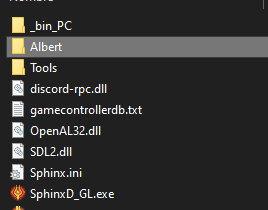
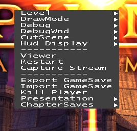

FAQ
Here are some of the most common questions for people playing the mod.
Reporting bugs -
I've found a bug or problem, or I want to suggest something. How to report it or contact the mod developer?
Currently there is only one way to report bugs; via the game's official Discord chat server. We have a #shadow-of-set channel where you can report any bugs that you find while playing, you can also notify me or send a private message by pinging my username (@jmarti856#4332).
Development mode -
I'd love to have cheats, fly around and load levels. Any way to have this kind of dev functionality?
The PC version of the game comes with a handy -dev mode option that can be useful to skip ahead whenever you get stuck, or when the game softlocks or there is any other bug preventing you continuing your playthrough.
To enable the -dev mode you need to launch the game with the -dev parameter as the first command-line option, here there is a guide for the Steam version of the game, but these parameters are also valid for the GOG variant.
-
First we need to go to our Steam Library and find the game, then right-click and go to Properties:

-
Click on Launch options...

-
To keep lauching the mod and add the debug functionality, we will need to use two parameters:
- The first one is just to enable the dev mode, we only have to type -dev.
- The second one is used to launch the mod itself. The format is -mod "PathToFolder", either a relative or absolute path. It is also very important that the path to the folder uses the quotation marks to avoid problems.
-dev -mod "../../workshop/content/606710/1614156774"
Copied!
-
If you also want to modify the inventory or the game objectives via the Watcher debug window, you also need to create a folder called Albert in you game installation directory. Inside this folder, we have to put the Hashcodes.h file with the human-readable tags that the game will load, if you don't have the Authoring Tools DLC installed, you can get the file from this link.
 -
After this, when we right-click in the game window, a context menu with a level selector and other functions (like the option to open the Watcher) should appear:
